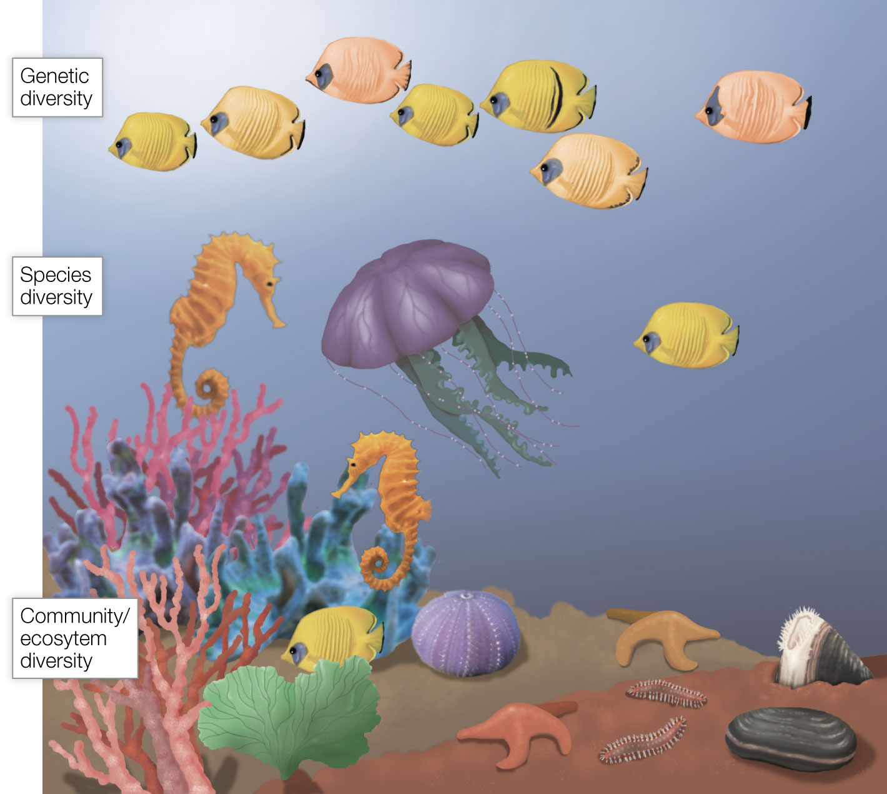
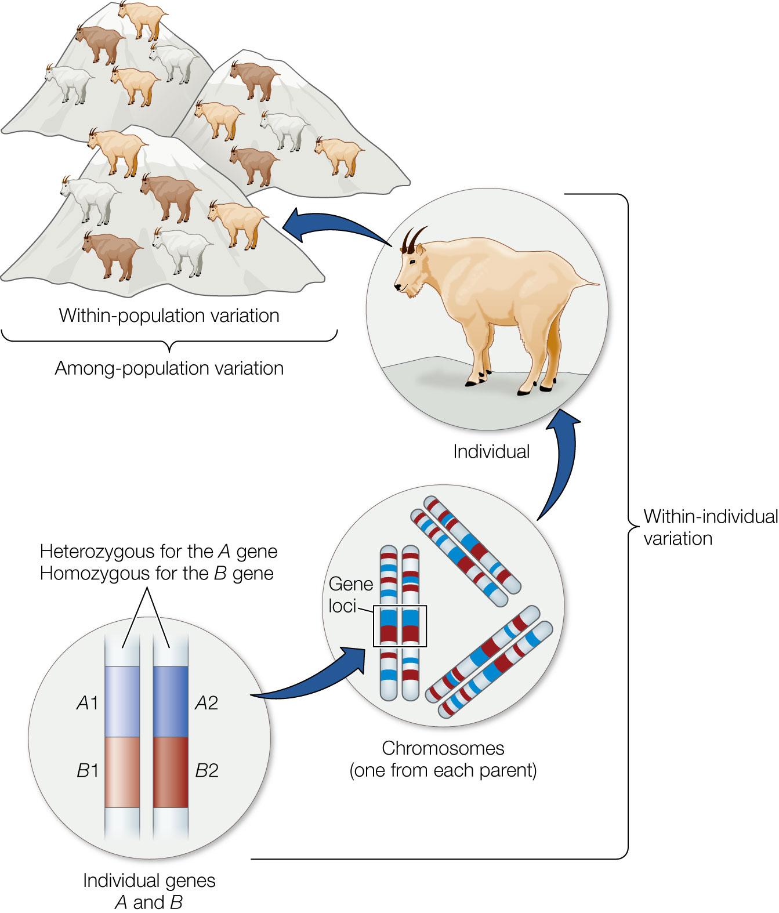
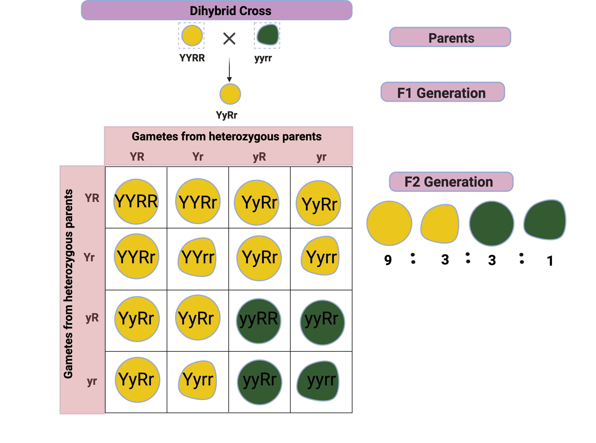
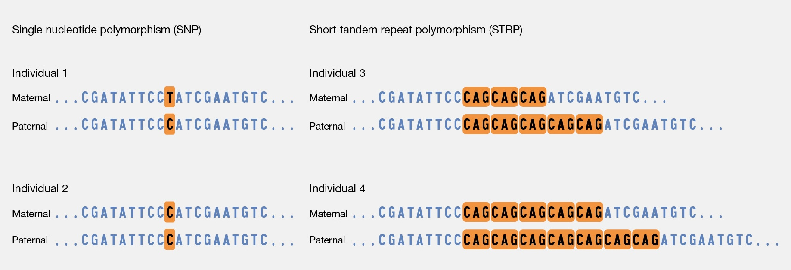
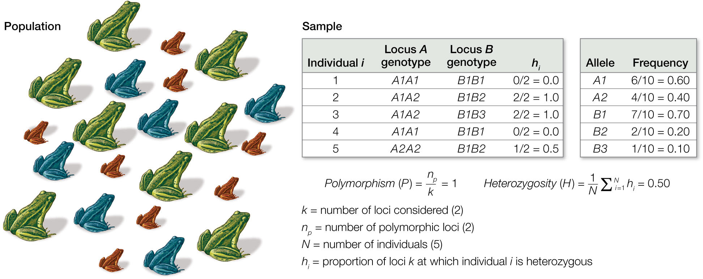

Conservation Biology
Wed Sep 3, 2025

How do we define the boundary of that geographical area?

Individuals all have the same set of homologous chromosomes.
The ____ on those chromosomes are represented by different ____.
Individuals all have the same set of homologous chromosomes.
The genes on those chromosomes are represented by different alleles.
____ are different forms of the same ____.
Alleles are different forms of the same gene.
We could also describe them as sequences of DNA that are found on the same gene ______.
Alleles are different forms of the same gene.
We could also describe them as sequences of DNA that are found on the same gene locus.

For the F2 Generation:

